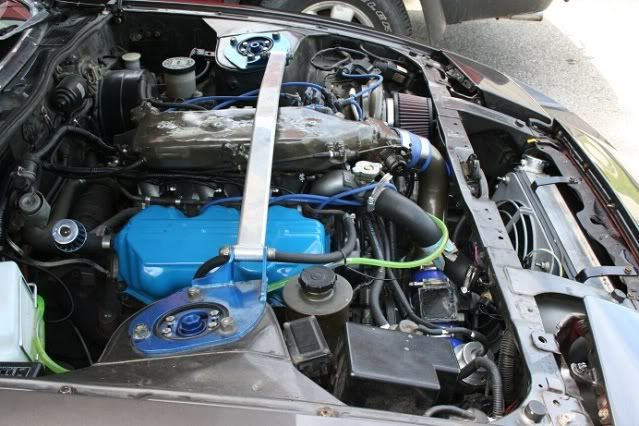
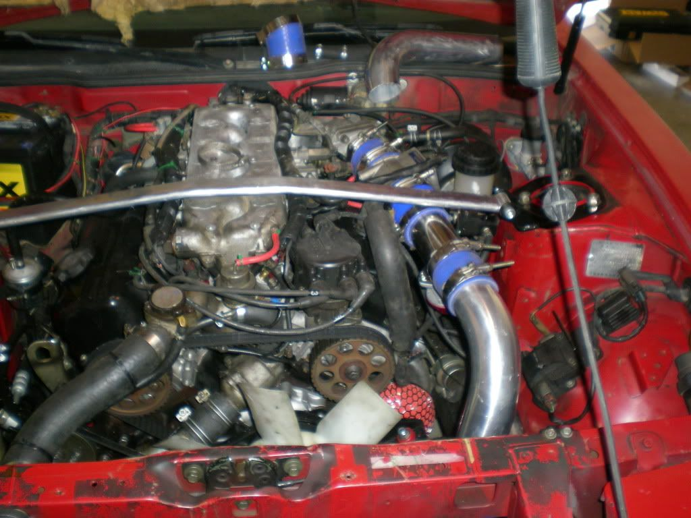

-
And IC piping kit/set, where do you guys place your MAF sensor? I'm thinking of re-doing my IC piping.
http://z31performance.com/forum/…p?f=13&t=20711 B-n-B built 87T - 500whp goal. -
blow through . You can kinda see it here
86na2t + holset
feedback
viewtopic.php?f=18&t=6114&hilit=andrew+gardner -
same. eliminated the need for turbo inlet plumbing.
88 z31 tubo auto25spd, 3"TBE, poly everywhere, profec b s2, 60-1, stupid stereo (not 17 anymore), short throw, DXD s4, crushed fpr, FMIC, engloid upper, HK RS-3's sure I am forgetting things but you get the idea.
08 dakota 5" 33's "cute mods"
06 g6 gtp - wifey k&n filter
2x 84 z31 turbo 5spd - parts
85 z31 turbo auto - parts -
What about BOV placement? Should I place it before or after MAF?
Before as in…
====[BOV]====[MAF]===>TB
or
====[MAF]====[BOV]===>TB?
http://z31performance.com/forum/…p?f=13&t=20711 B-n-B built 87T - 500whp goal. -
And that's really interesting, never seen MAF placement on a z31 near the TB.system6 wrote: same. eliminated the need for turbo inlet plumbing.
http://z31performance.com/forum/…p?f=13&t=20711 B-n-B built 87T - 500whp goal. -
It should be BOV > MAF > TB with the MAF being as close as possible to the TB. That way, when you close the throttle body (let go of the gas pedal), the bov will direct excess compressed air into the atmosphere instead of getting metered through the MAF.'85 z31 stock -
So if I attach the MAF to the TB, will that be ok?
http://z31performance.com/forum/…p?f=13&t=20711 B-n-B built 87T - 500whp goal. -
There are mixed feelings about that. Some say yes, some say 12-18" before the tb. Try it and find out.Hmmm, Whats next?
Full Size Bronco, smashing shit.
84ZXT -
I am definitely not the first one to do this, I used to be one of the "naysayers" that said you shouldn't do it if you want proper resolution. I know of some others that went before me with it and had no issues. Come time to lay it out in a system it was just too easy to put it there. I have had no negative effects with the exception of having to adjust the throttle stop plate due to the loss of the aic/ficd. I think it is perfectly acceptable and eliminates a lot of potential issues with boost leaks and pipes popping off on the freeway and the car not wanting to run etc. etc.rayz31 wrote: So if I attach the MAF to the TB, will that be ok?88 z31 tubo auto25spd, 3"TBE, poly everywhere, profec b s2, 60-1, stupid stereo (not 17 anymore), short throw, DXD s4, crushed fpr, FMIC, engloid upper, HK RS-3's sure I am forgetting things but you get the idea.
08 dakota 5" 33's "cute mods"
06 g6 gtp - wifey k&n filter
2x 84 z31 turbo 5spd - parts
85 z31 turbo auto - parts -
Wouldn't that principle work just as well if the MAF was, say, 12" from the TB (for resolution) and the BOV was still right before the MAF ?wasupman2 wrote: It should be BOV > MAF > TB with the MAF being as close as possible to the TB. That way, when you close the throttle body (let go of the gas pedal), the bov will direct excess compressed air into the atmosphere instead of getting metered through the MAF.
BOV --> MAF --------------------> 12" ------------> TB -
I LIKE the color of those Valve Covers :supergardner86zx wrote: blow through . You can kinda see it here
Probably because my car is blue.
Rattle can or professional ? (They look powder coated in the photo)
Prolly should have PM'd ya. Sry for the thread hi-jacking -
Here is my blow threw setup.
these are old…and yes ik i need a intercooler…in bottom pic i have a bov but in these i dont its from when i first bought it (day after anyways). The bov is on the curved pipe that comes out of the turbo and the MAF is on the way up to the intake.
bov is under the filter on the the curved pipe…i have the intercooler and pipe in the garage just need time to install it along with the ritter rad. Also have AEM tru boost (ebc) now and not the shitty ebay mbc
86 NA
87 Turbo
Member of the "zetto sun-ichi" group
Local MN car forum/club anyone welcome..... fivezeroseven.net join! -
The BOV should be between the throttle body and the MAF to protect the MAF imo.wasupman2 wrote: It should be BOV > MAF > TB with the MAF being as close as possible to the TB. That way, when you close the throttle body (let go of the gas pedal), the bov will direct excess compressed air into the atmosphere instead of getting metered through the MAF. -
[quote]DaftZX wrote:No.this completley defeats the purpose of switching to blow thru in the first place.Originally posted by wasupman2"If your car cant do a burnout from a 60mph rolling start, then your engine needs more work."
"Nitrous doesn't blow up motors; Idiots with nitrous blow up motors."
Shooting for 500whp

-
protect the MAF from what? the pressure it see's when in boost throttle open anyways?
Like said, defeats the purpose of going blow through.
Seal the health out of it, you'll blow the cap off of it.
I suggest if you're going to stay stock MAF welding the element into your IC pipe, its not worth the headaches you get when you seal it with JB weld and think its good at 15psi, then you throw some race gas in and it pops the top on more boost.
If you're gonna go blow through, do it right. It can be annoying.
12-15psi on the stock turbo is safe on the stock MAF with some JB weld, I popped them anything over that, and my holset raped them. lolFour Doors for More Whores

Copyright © 2006–. All rights reserved. Privacy Policy